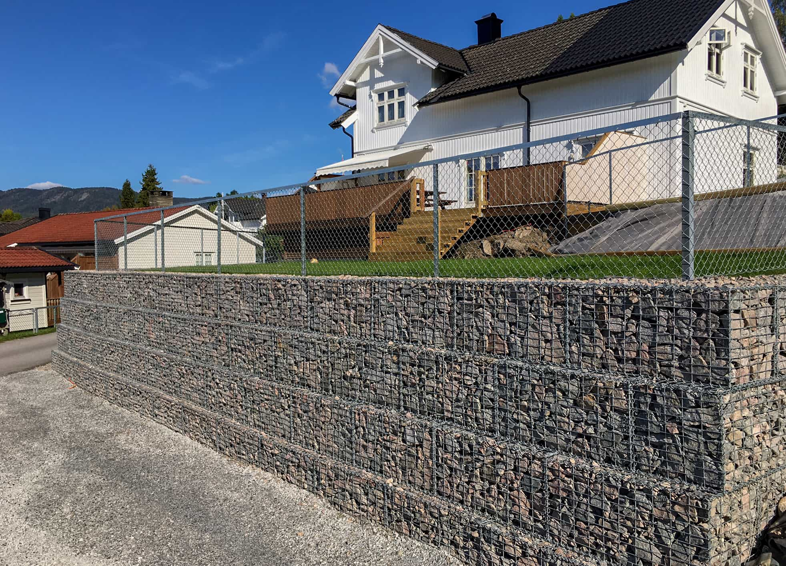
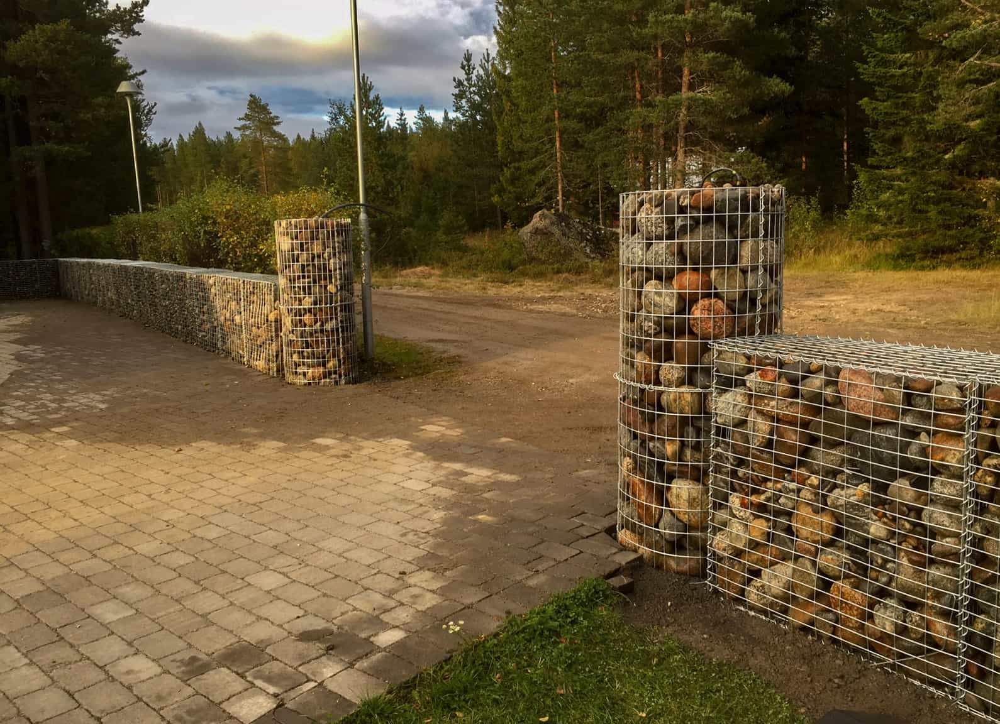
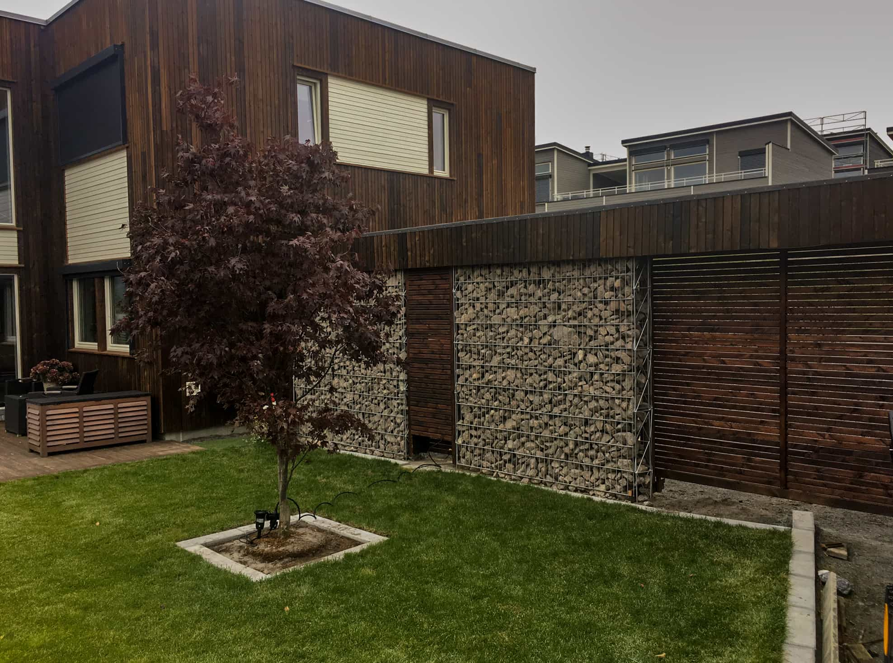

Trivia

- Gabioner er en eldgammel og solid byggeteknikk som har blitt meget populær i Europa og Norge. Ordet gabion stammer fra Italia og betyr bur, kister eller bokser fylt med masse, stein eller sand.
- Det har blitt brukt gabioner i mer enn hundre år. I Bologna i Italia finnes det gabioner fra 1890-tallet som fortsatt er intakte.
- Gabionkassen er laget av galvanisert ståltråd. Det er viktig med rustbeskyttelse for å forlenge levetiden. Galvanisering sørger for lang levetid.
- Typisk steinstørrelse til å fylle opp er 10-15cm. Kulestein fra sandtak kan gi en fin unik støttemur eller gjerde som er vedlikeholdsfri.

- Vegvesnet har i Norge brukt gabioner først og fremst til å bygge tørrmurer i forbindelse med veibygging.
- Siden tidlig på 2000 tallet har etterspørselen etter gabioner økt kraftig da bygging med bruk av gabioner er billigere og enklere enn de fleste alternativer. Man fyller kurvene med ønsket type stein som i sin helhet blir til en mur eller fasade. Man kan slippe å bruke store gravemaskiner hvor man tidligere puslet stein sammen til en mur.
- Fyllmateriale vil typisk være knuste eller runde steinmaterialer med en dimensjon som passer til maskevidden på trådgitrene. Til maskevidden 50x100 mm vil den optimale fraksjon være 80-150 mm. Andre materialer, for eksempel knust tegl eller mur eller betong kan også brukes. Oppfylling med friksjonsjord eller organisk fyll kan normalt ikke anbefales.

- Det er mulig å stable murstein, belegningstein etc. ytterst i gabionkassen. Fyll så med grusmasse inne i kassen.
- Våre gabioner er forventet å vare uten problemer i mange år. Stålkonstruksjonen eller gabion-kassene kan kanskje virke som de kun utgjør en liten del av hele investeringen. Det vil imidlertid kunne ha en avgjørende betydning i hvor lenge vi vil ha glede av det.
- Våre gabionkasser kan skreddersys til et hvert formål som forstøtningsmurer, støyskjermer, benker, blomsterbed, og mye mer. Praktisk og estetisk.
- Gabioner er enklere å transportere og sette på plass enn større steiner, som må skyves og løftes med gravemaskin. Gabion kassen kan fylles med stein, skifer, jord eller glass. Det er bare fantasien som setter grenser. Gabionene er formet av individuelle paneler og koblet sammen med spiraler av stålstråd. Enkelt, genialt og vedlikeholdsfritt til en rimelig pris.
Tilbake til toppen